All Publications
International Papers
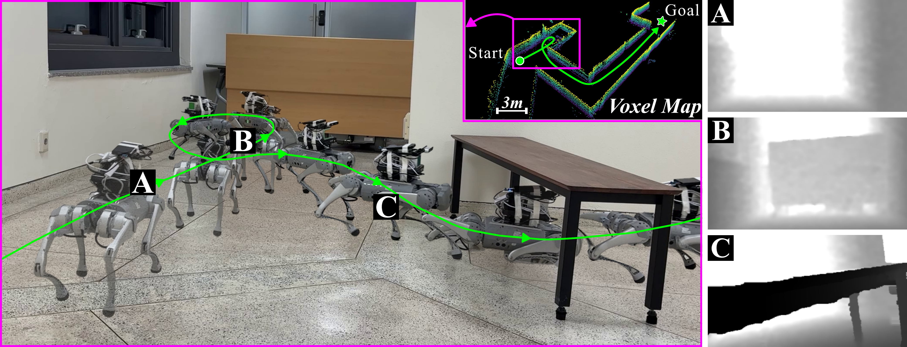
HiPAN: Hierarchical Posture-Adaptive Navigation for Quadruped Robots in Unstructured 3D Environments
IEEE Robotics and Automation Letters (RA-L), 2026
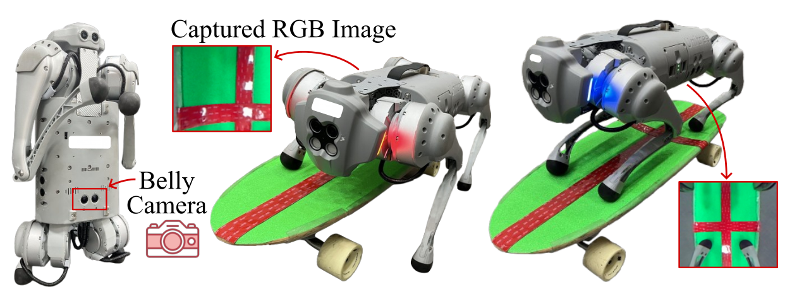
Phase-Aware Policy Learning for Skateboard Riding of Quadruped Robots via Feature-wise Linear Modulation
IEEE International Conference on Robotics and Automation (ICRA), 2026
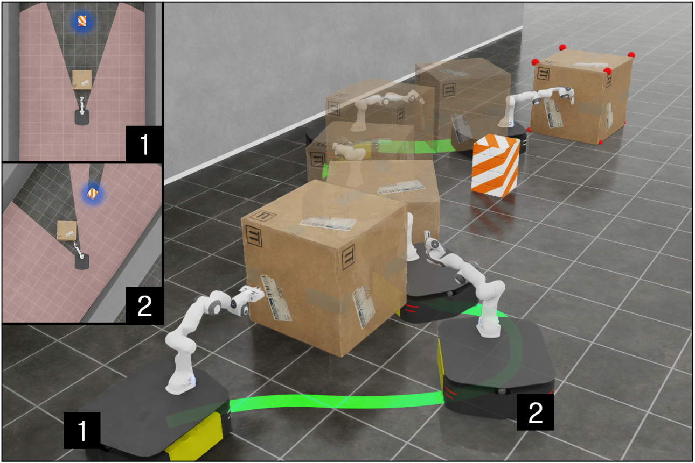
Uncertainty-Aware Non-Prehensile Manipulation with Mobile Manipulators under Object-Induced Occlusion
IEEE International Conference on Robotics and Automation (ICRA), 2026
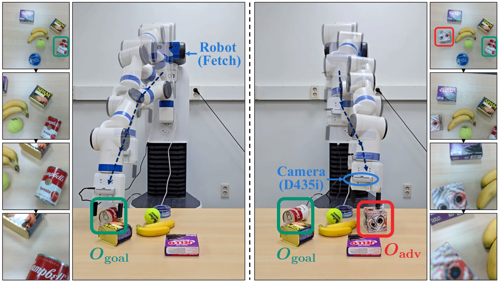
Beyond the Patch: Exploring Vulnerabilities of Visuomotor Policies via Viewpoint-Consistent 3D Adversarial Object
IEEE International Conference on Robotics and Automation (ICRA), 2026
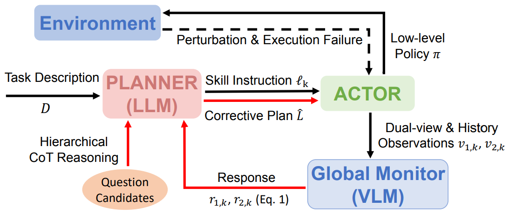
LangPert: Detecting and Handling Task-level Perturbations for Robust Object Rearrangement
arXiv preprint, 2025
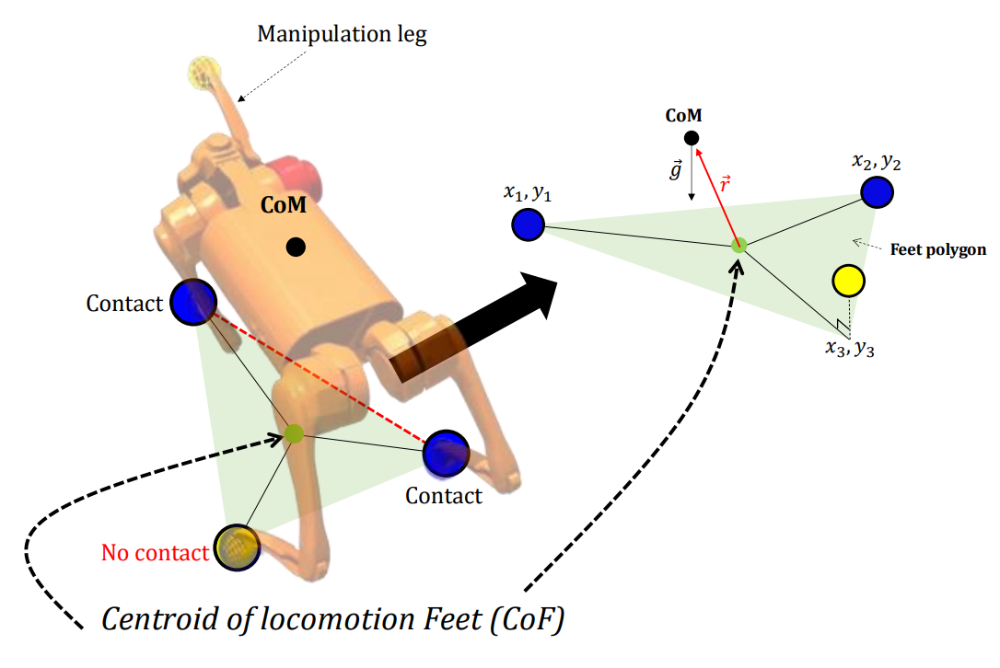
Robust Pedipulation on Quadruped Robots via Gravitational-moment Minimization
International Journal of Control, Automation, and Systems (IJCAS), 2025
(Also presented at International Conference on Control, Automation and Systems (ICCAS), 2025)
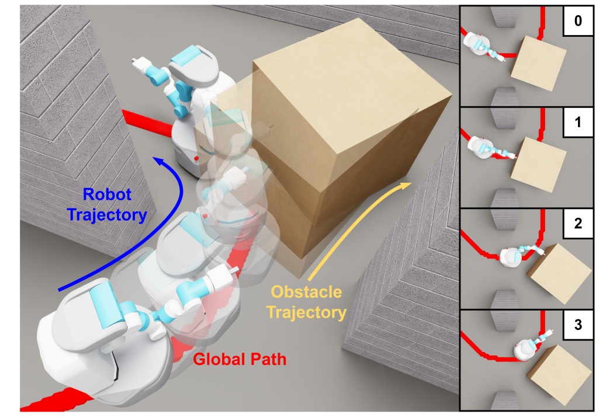
Efficient Navigation Among Movable Obstacles using a Mobile Manipulator via Hierarchical Policy Learning
IEEE/RSJ International Conference on Intelligent Robots and Systems (IROS), 2025
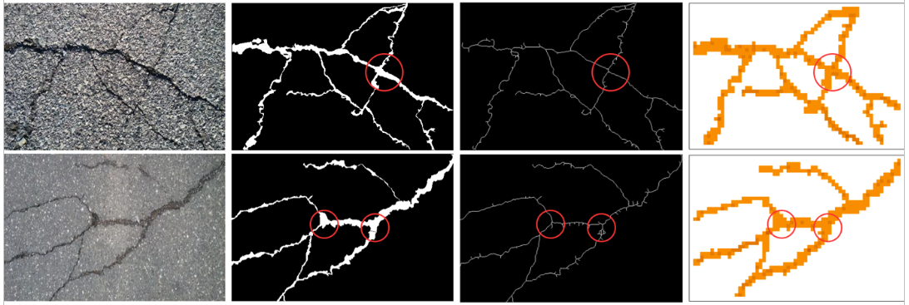
Metaheuristic Asphalt Crack Sealing Path Planning based on Discrete Grey Wolf Optimizer
International Journal of Hydromechatronics, 2025
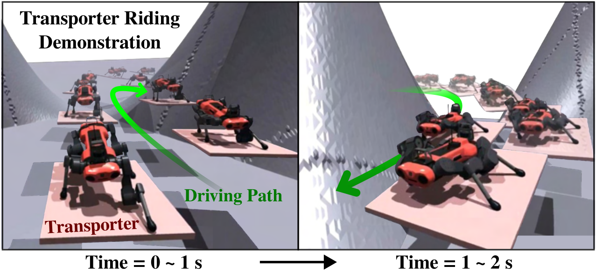
Enhancing Navigation Efficiency of Quadruped Robots via Leveraging Personal Transportation Platforms
IEEE International Conference on Robotics and Automation (ICRA), 2025
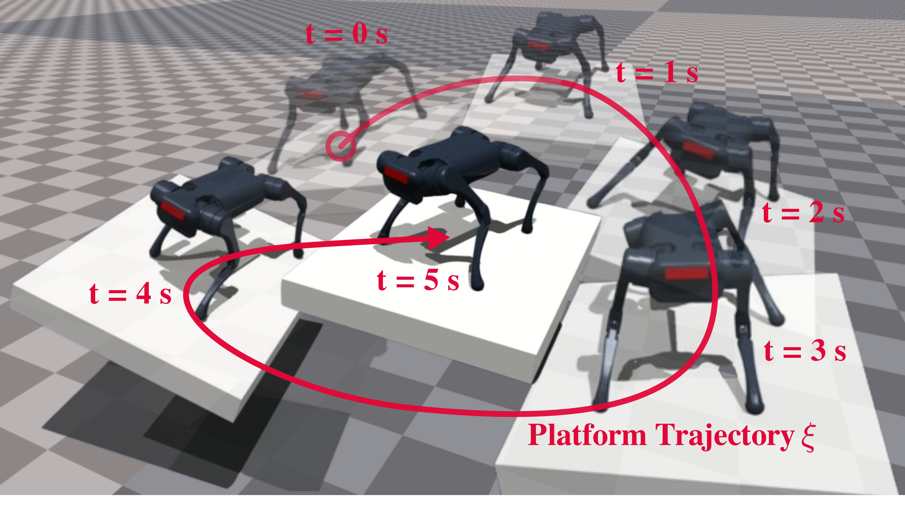
Learning-based Adaptive Control of Quadruped Robots for Active Stabilization on Moving Platforms
IEEE/RSJ International Conference on Intelligent Robots and Systems (IROS), 2024
(Also presented at Agile Robotics Workshop at ICRA 2024)

Analysis of Terrain-Aware Optimal Path Planning Methods for Stable Off-Road Navigation
Off-Road Autonomy Workshop at IEEE Intelligent Vehicles Symposium (IV), 2024

Learning-based Initialization of Trajectory Optimization for Path-following Problems of Redundant Manipulators
IEEE International Conference on Robotics and Automation (ICRA), 2023
🏆 Outstanding Planning Paper Award (top 1.1%)

Towards Safe Remote Manipulation: User Command Adjustment based on Risk Prediction for Dynamic Obstacles
IEEE International Conference on Robotics and Automation (ICRA), 2023
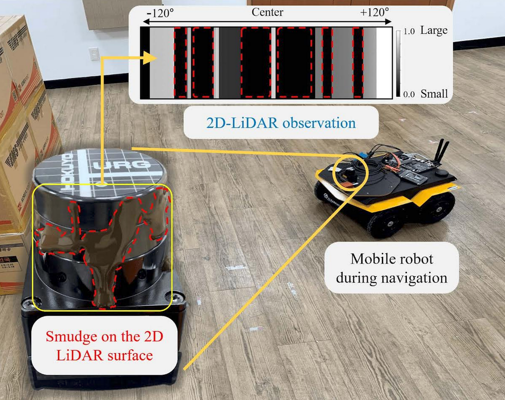
Confidence-Based Robot Navigation Under Sensor Occlusion with Deep Reinforcement Learning
IEEE International Conference on Robotics and Automation (ICRA), 2022
🏆 Outstanding Navigation Paper Finalist Award (top 2.7%)
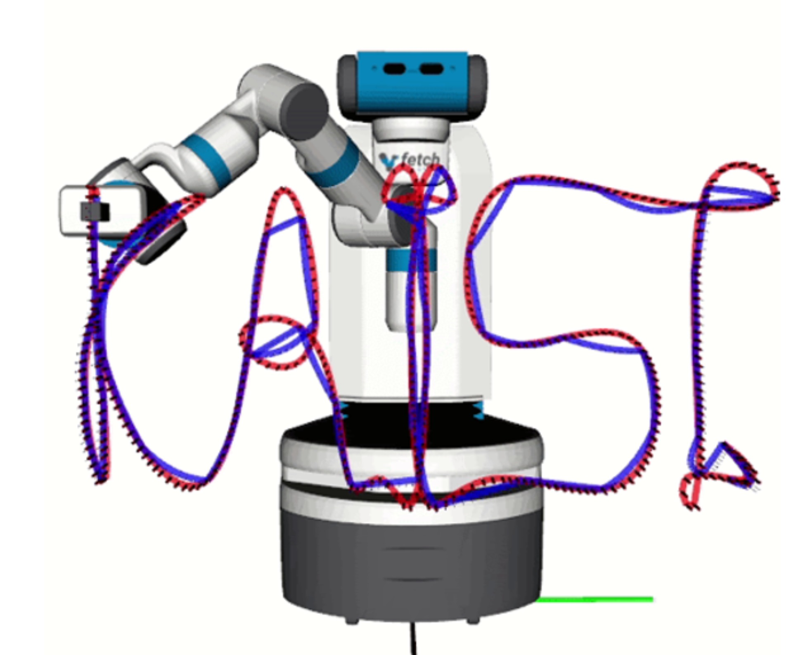
Fast and Robust Trajectory Generation for Cartesian Path-following Problems of Redundant Manipulators
Machine Learning for Human-Robot Interaction (HRI) Workshop at RO-MAN, 2022
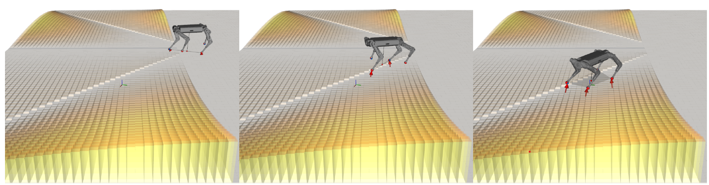
Deep Neural Network-based Fast Motion Planning Framework for Quadrupedal Robot
Machine Learning for Motion Planning (MLMP) Workshop at ICRA, 2021
Domestic (Korean) Papers

Adversarial Attack on Visuomotor Policy
Korea Computer Congress (KCC), 2024
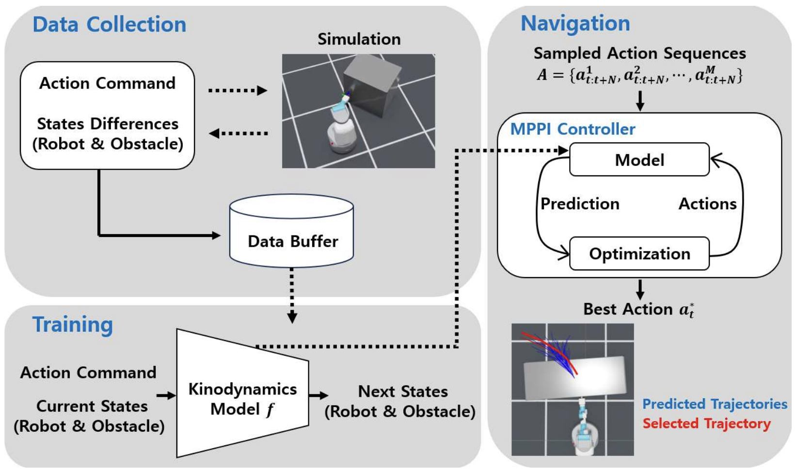
Manipulator-Assisted Navigation Among Movable Obstacles using Learned Robot-Obstacle Kinodynamics Model
Korea Robotics Society Annual Conference (KRoC), 2024
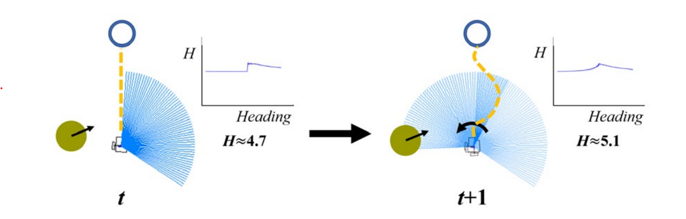
Robust Robot Navigation against External Disturbance using Deep Reinforcement Learning
Korea Robotics Society Annual Conference (KRoC), 2021
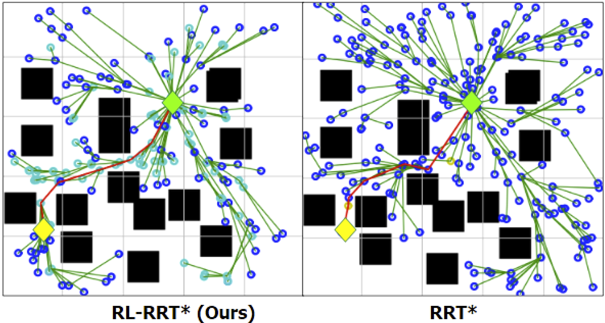
Bias tree expansion using reinforcement learning for efficient motion planning
Korea Robotics Society Annual Conference (KRoC), 2021